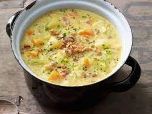

Italian Zucchini Potato Soup

Italian potato soup is a hearty blend of potatoes, Italian sausage,
basil and other vegetables to warm your soul on a chilly evening.
Ingredients
- 1 lb Italian sausage, loose or casings removed
- 1.5 lb Yukon gold or Russet potatoes
- 1 medium onion, chopped
- 2 cups red bell pepper
- 1 lb zucchini, sliced into bite-sized pieces
- 1 lb zucchini squash, sliced into bite-sized pieces
- 5 plum tomatoes, diced
- 2 garlic cloves, minced
- 2 quarts chicken, beef, or vegetable broth
- 2 tablespoons chopped fresh basil
- 1 cup Parmesan, coarsely grated
- 1 thyme sprig
- A pinch of pepper flakes
Steps
- Prepare veggies and potatoes by dicing or chopping
- Add 1 Tbsp olive oil to large pot or Dutch oven and heat over medium-high heat.
Add Italian sausage, removing the casing if necessary. Break up the meat
with a wooden spoon until browned, approx 5 minutes.
- After meat has browned, add onion and bell pepper and saute for 4 minutes
- Move meet and veggies to the sides and lower heat to medium.
Add garlic, pepper flakes, and diced tomatoes to the center and cook for 2 minutes, stirring occasionally.
- Add remaining potatoes, tomatoes, zucchini, squash, broth, Parmesan, basil and thyme.
Stir well to combine. Add salt and pepper to taste.
- Bring the soup to a simmer and cook covered until all the vegetables are tender, about 10 to 15 minutes.
- Top with fresh basil and more Parmesan. Enjoy!